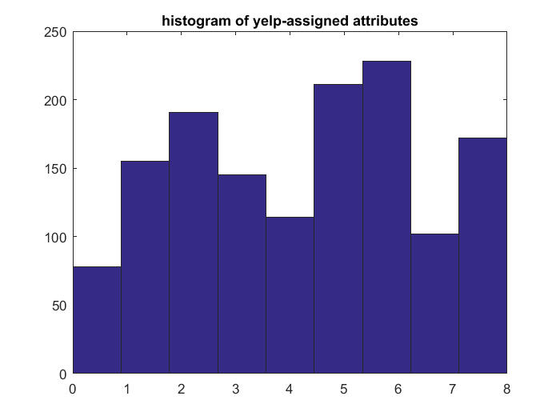
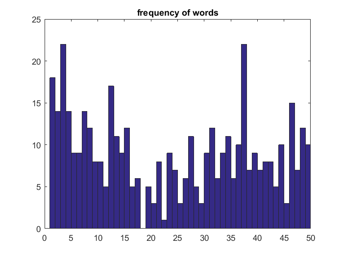
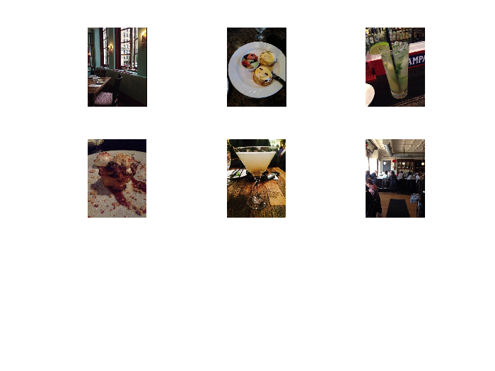

Contents
addpath('Output'); load('Yelp_5_keypoints.mat'); % RUN THIS CODE. IT DOESN'T TAKE LONG
ATTRIBUTES:
0: good_for_lunch 1: good_for_dinner 2: takes_reservations 3: outdoor_seating 4: restaurant_is_expensive 5: has_alcohol 6: has_table_service 7: ambience_is_classy 8: good_for_kids
%%%%%%%%%%%%%%%%%%%%%%%%%%%%%%%%%%
SURFMat CELL DESCRIPTION:
%1. FileName, %2. Five feature vectors for the image %3. Business ID %4. Photo ID %5. Yelp- Assigned Attributes %6. Cluster Round 1
A=yelp_info.SurfMat;
restaurants_in_data_set = [A{:,3}];
unique_restaurants = length(unique(restaurants_in_data_set)); % 257 restaurants
Find the most frequent attributes
total_yelp_attributes = [A{:,5}];
hist(total_yelp_attributes,9)
title('histogram of yelp-assigned attributes')
%Based on the histogram the most frequent yelp-assigned attributes are
%[2, 5, 6, 8, 1, 3, 4, 7, 0].
 I will look for the images that share at least the following attributes [2,5,6];
iterate through the list and flag the images
top_yelp_attributes = [2,5,6]; %<<<<<<<<<<<<<<<< Change this vector to focus on specific attributes. flag_vector = zeros(length(A),1); for i=1:length(A) if(sum(ismember(top_yelp_attributes,A{i,5})) >= 3) flag_vector(i)=1; end end percentage_of_images_that_hold_top_yelp_attributes = sum(flag_vector)/length(A);
In this section we check which clusters were assigned to the flagged images.
tic
flagged_images = {sum(flag_vector),6};
j=0;
for k =1:sum(flag_vector)
if(flag_vector(k)== 1)
j=j+1;
for h=1:6
flagged_images{j,h}=A{k,h};
end
end
end
toc
Elapsed time is 0.002937 seconds.
Look at the centroids.
Now that the flagged images are selected. Find the most frequent centroids that the figures were assigned to.
centroids = [flagged_images{:,end}];
histogram_results = hist(centroids,length(unique(centroids)));
hist(centroids,length(unique(centroids)));
title('frequency of words')
[histogram_results, max_val_centroid] = sort(histogram_results,'descend');
%table with the most frequent centroids.
most_frequent_centroids = [histogram_results', max_val_centroid']
most_frequent_centroids =
22 3
22 37
18 1
17 12
15 46
14 2
14 4
14 7
12 8
12 15
12 31
12 48
11 13
11 27
11 34
10 36
10 44
10 49
9 5
9 6
9 14
9 23
9 30
9 33
9 39
8 9
8 10
8 21
8 41
8 42
7 24
7 38
7 40
7 47
6 17
6 26
6 32
6 35
5 11
5 16
5 19
5 28
5 43
3 20
3 25
3 29
3 45
1 22
0 18
 Get the figures with the most frequent centroids.
Grab the figures that have centroid [3,37,1,12].
centroid_vector=[3,37,1,12]; contain_at_least = 2; % get images that contain at least xx values from centroid vector img_containing_centroid_vector={}; j=0; for k=1:length(flagged_images) if(sum(ismember(centroid_vector, flagged_images{k,6})) >= contain_at_least ) j=j+1; img_containing_centroid_vector{j,1} = flagged_images{k,1}; img_containing_centroid_vector{j,2} = flagged_images{k,5}; end end n=length(img_containing_centroid_vector); for k=1:n subplot(ceil(n/2),ceil(n/2),k) imshow(img_containing_centroid_vector{k}) end
Now let's see what yelp-attributes the selected images share.
shared_attributes = [img_containing_centroid_vector{:,2}];
[ii, jj] =unique(shared_attributes);
tmp=hist(shared_attributes, length(ii))
[i1,i1]=sort(jj);
B=tmp(i1)'
% Most of these figures fall into class 2,5,6. Does this mean that the
% centroids selected above correspond to 2,5,6??
% 0: good_for_lunch
% 1: good_for_dinner
% 2: takes_reservations
% 3: outdoor_seating
% 4: restaurant_is_expensive
% 5: has_alcohol
% 6: has_table_service
% 7: ambience_is_classy
% 8: good_for_kids
tmp =
2 6 3 2 6 6 1 3
B =
6
6
6
3
2
3
2
1